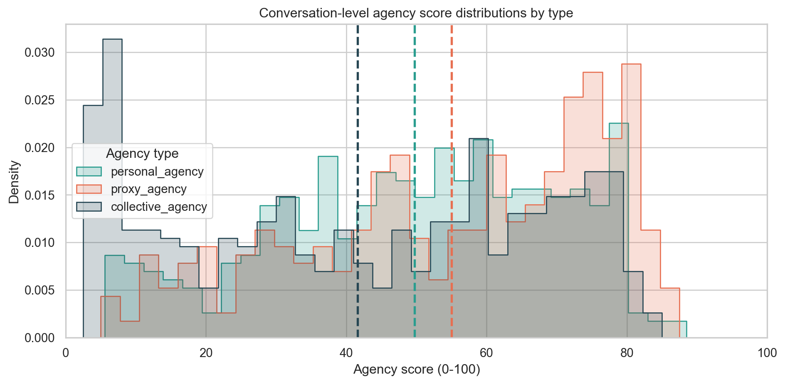
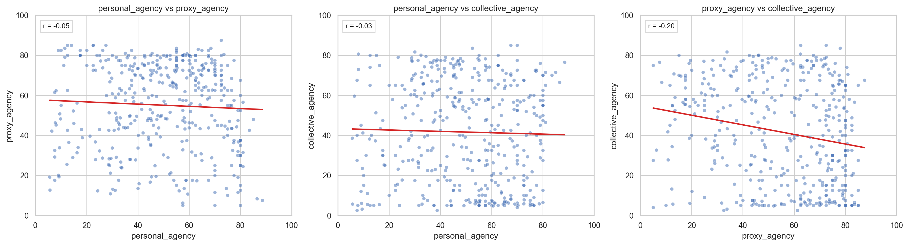

| measure | value | |
|---|---|---|
| 0 | n_conversations | 417.000000 |
| 1 | mean_personal_agency | 49.729916 |
| 2 | mean_proxy_agency | 55.031894 |
| 3 | mean_collective_agency | 41.613889 |
| 4 | mean_average_agency_score | 48.791900 |
Gabriel Agency Measurement Report
1) Agency Definitions And Score Calculation
This report uses three conversation-level agency dimensions (each on a 0-100 scale):
personal_agency: how much the user expresses their own capability, ownership, and control over action.proxy_agency: how much the user relies on an external agent (for example, an AI assistant) for guidance, decisions, or delegated execution.collective_agency: how much the user frames progress as coordinated team effort across multiple actors.
How scores are calculated in this pipeline:
- Step 03 rates each conversation chunk on all three dimensions.
- Chunk scores are averaged to produce one conversation-level score per dimension.
average_agency_scorein this report is the arithmetic mean of personal, proxy, and collective agency.proxy_minus_personalisproxy_agency - personal_agency.
2) Distribution Of Agency Scores By Type (Conversation-Level)
This histogram overlays the three score distributions (personal, proxy, collective), with one dashed vertical line per type marking that type’s mean score.
Interpretation guide:
- Curves farther right indicate higher scores.
- Wider spread means more variation across conversations.
- Mean lines make it easy to compare central tendency across agency types.

Summary statistics for each distribution:
| agency_type | n | mean | median | std | min | q25 | q75 | max | |
|---|---|---|---|---|---|---|---|---|---|
| 0 | collective_agency | 417 | 41.61 | 42.5 | 25.35 | 2.5 | 17.50 | 65.00 | 85.0 |
| 1 | personal_agency | 417 | 49.73 | 52.0 | 20.15 | 5.6 | 35.00 | 65.60 | 88.5 |
| 2 | proxy_agency | 417 | 55.03 | 60.0 | 21.56 | 5.0 | 39.25 | 73.75 | 87.5 |
3) Pairwise Agency Scatter Plots (Conversation-Level)
Each point is one conversation. The three side-by-side plots show all pairwise comparisons of agency types:
- Personal vs Proxy
- Personal vs Collective
- Proxy vs Collective
Interpretation guide:
- Points near the upper-right have high values on both dimensions.
- Points near the diagonal indicate similar levels for the two dimensions.
- Strong slope patterns suggest the two dimensions rise or fall together.
- Red fitted line: linear best fit for the two variables.
rshown on each panel: Pearson correlation (ranges from -1 to +1).

4) LangExtract Redacted Evidence Examples With Gabriel Scores
This table uses the exact same example-selection logic as the Redacted evidence examples section in: docs/langextract/agency_signals_report.qmd.
Selection logic (unchanged):
- sort by
is_candidate(descending), then n_heuristic_extractions(descending), thensnippet_char_len(descending), then- take the first 12 rows.
The selected rows are then joined with Gabriel conversation-level scores.
| conversation_title | snippet_redacted | average_agency_score | personal_agency | proxy_agency | collective_agency | proxy_minus_personal | n_user_messages | n_user_chars | heuristic_constructs | n_heuristic_extractions | is_candidate_langextract | is_candidate_gabriel | |
|---|---|---|---|---|---|---|---|---|---|---|---|---|---|
| 1 | Interactive Brain Game | based on the activities that I give you, could... | 58.33 | 51.25 | 80.0 | 43.75 | 28.75 | 3.0 | 6225.0 | help_seeking_resourcefulness,problem_decomposi... | 2 | True | True |
| 9 | Leadership theories and styles | Lesson 2 Overview Dwight D. Eisenhower (left) ... | 32.83 | 31.10 | 12.5 | 54.90 | -18.60 | 2.0 | 53203.0 | help_seeking_resourcefulness | 1 | True | True |
| 11 | Case study ideas ChatSEL | based on what's written in phase 3, I wan... | 54.03 | 62.70 | 68.7 | 30.70 | 6.00 | 6.0 | 64473.0 | goal_setting | 1 | True | True |